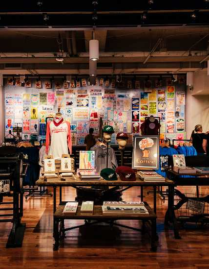

<!doctype html>

<html class="no-js" lang="en">

<head>
  <meta charset="utf-8" />
  <meta http-equiv="x-ua-compatible" content="ie=edge">
  <meta name="viewport" content="width=device-width, initial-scale=1.0">
  <title>GDES1060 – MW-proj1.4</title>
  <link rel="stylesheet" href="css/foundation.css">
  <link rel="stylesheet" href="css/motion-ui.min.css" />
  <link rel="stylesheet" href="css/app.css">
</head>
</html>

<body>

  <!-- Your code goes here -->
<header> 
  <div style="background-color: black ; padding: 10px;">
    <a href="index.html">
  
</a>
</div>
</header>
<div class="reveal" id="main-menu" data-reeal>
<div class="main-content">
 

<main>
  <div class="card" style="width: 415px;">
  <div class="card-divider">
    <h1><b>Featured Exhibit</b></h1>
  </div>
    <button class="button" type="button" data-toggle="example-dropdown">More Information</button>
<div class="dropdown-pane" id="example-dropdown" data-dropdown data-auto-focus="true">
   <h4><b>KACEY MUSGRAVES: ALL OF THE COLORS</b></h4>
   <div class="card-section">
    <p>Channeling her own galactic country spirit and influences from Dolly Parton to Daft Punk, Kacey Musgraves is riding a critical wave behind her Grammy-winning, universally acclaimed album Golden Hour.</p>
     <a class="button" href="Featured.html">learn more</a>
   </div> 
 </div>
  
</div>


  <div class="card" style="width: 415px;">
  <div class="card-divider">
    <h1><b>Whats New</b></h1>
  </div>
  <button class="button" type="button" data-toggle="example-dropdown2">More Information</button>
<div class="dropdown-pane" id="example-dropdown2" data-dropdown data-auto-focus="true">
   <h4><b>AMERICAN CURRENTS</b></h4>
   <div class="card-section">
    <p>The latest installment of American Currents: State of the Music—the Museum’s annual exhibition focused on the most significant developments in country music over the previous year—includes another broad mix of performers, musicians, and industry leaders whose songs and stories made an impact. Explore those stories in the galleries now.</p>
   </div> 
 </div>
  
</div>


 <div class="card" style="width: 415px;">
  <div class="card-divider">
    <h1><b>Upcoming Events</b></h1>
  </div>
  <button class="button" type="button" data-toggle="example-dropdown3">More Information</button>
<div class="dropdown-pane" id="example-dropdown3" data-dropdown data-auto-focus="true">
   <h4><b>FAMILY PROGRAM: SONGWRITING TUNE-UP</b></h4>
   <div class="card-section">
    <p>Songwriting Tune-Up offers budding songwriters the opportunity to build on skills gained in other museum songwriting programs. Through one-on-one mentoring sessions with a professional songwriter, Tune-Up encourages young writers to hone their craft and develop confidence.</p>
   </div> 
 </div>
 
 </div> 


<footer>
  <div style="background-color: orange ; padding: 10px;">
<p> Country Music Hall of Fame & Museum
222 Fifth Avenue South
Nashville, Tennessee 37203
615-416-2001
info@countrymusichalloffame.org</p>


</div>
</footer>

</main>


  <script src="js/vendor.js"></script>
  <script src="js/foundation.js"></script>

  <script>
    $(document).foundation();
  </script>

</body>

</html>